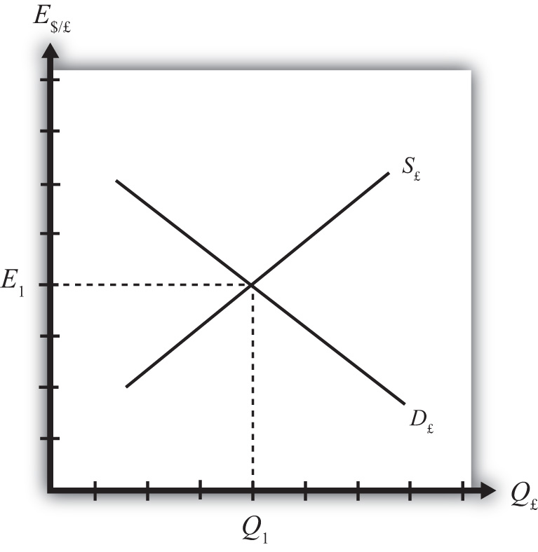
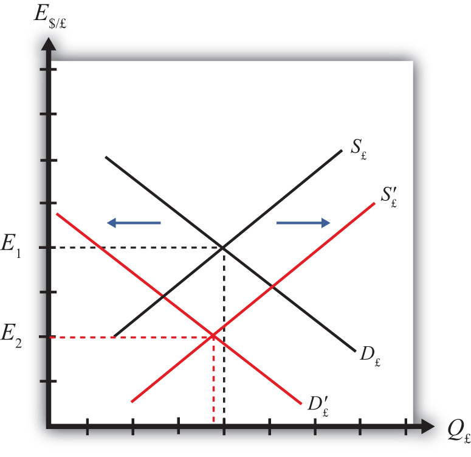
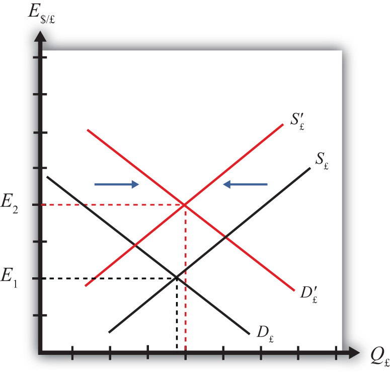
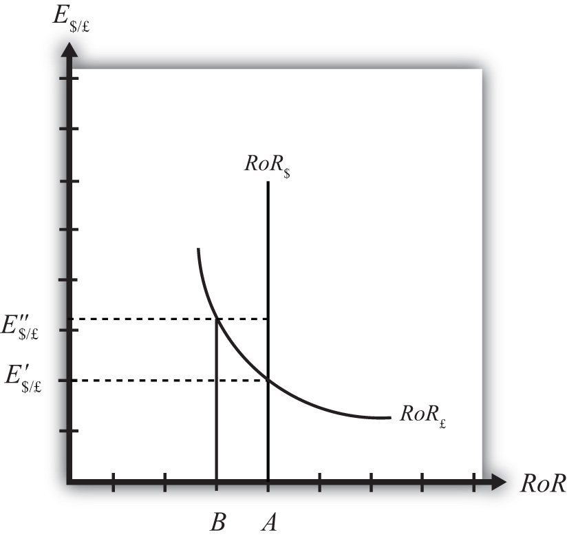
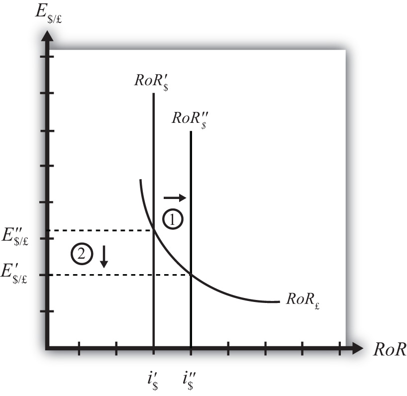

Interest rate parity is one of the most important theories in international finance because it is probably the best way to explain how exchange rate values are determined and why they fluctuate as they do. Most of the international currency exchanges occur for investment purposes, and therefore understanding the prime motivations for international investment is critical.
The chapter applies the rate of return formula developed in Chapter 15 "Foreign Exchange Markets and Rates of Return" and shows how changes in the determinants of the rate of return on assets affect investor behavior on the foreign exchange market, which in turn affects the value of the exchange rate. The model is described in two different ways: first, using simple supply and demand curves; and second, using a rate of return diagram that will be used later with the development of a more elaborate macro model of the economy.
Interest rate parity (IRP)A condition in which the rates of return on comparable assets in two countries are equal. is a theory used to explain the value and movements of exchange rates. It is also known as the asset approach to exchange rate determination. The interest rate parity theoryA theory of exchange rate determination based on investor motivations in which equilibrium is described by the interest rate parity condition. assumes that the actions of international investors—motivated by cross-country differences in rates of return on comparable assets—induce changes in the spot exchange rate. In another vein, IRP suggests that transactions on a country’s financial account affect the value of the exchange rate on the foreign exchange (Forex) market. This contrasts with the purchasing power parity theory, which assumes that the actions of importers and exporters, whose transactions are recorded on the current account, induce changes in the exchange rate.
Interest rate parity refers to a condition of equality between the rates of return on comparable assets between two countries. The term is somewhat of a misnomer on the basis of how it is being described here, as it should really be called rate of return parity. The term developed in an era when the world was in a system of fixed exchange rates. Under those circumstances, and as will be demonstrated in a later chapter, rate of return parity did mean the equalization of interest rates. However, when exchange rates can fluctuate, interest rate parity becomes rate of return parity, but the name was never changed.
In terms of the rates of return formulas developed in Chapter 15 "Foreign Exchange Markets and Rates of Return", interest rate parity holds when the rate of return on dollar deposits is just equal to the expected rate of return on British deposits, that is, when
RoR$ = RoR£.Plugging in the above formula yields
This condition is often simplified in many textbooks by dropping the final term in which the British interest rate is multiplied by the exchange rate change. The logic is that the final term is usually very small especially when interest rates are low. The approximate version of the IRP condition then is
One should be careful, however. The approximate version would not be a good approximation when interest rates in a country are high. For example, back in 1997, short-term interest rates were 60 percent per year in Russia and 75 percent per year in Turkey. With these interest rates, the approximate formula would not give an accurate representation of rates of return.
Investor behavior in asset markets that results in interest parity can also explain why the exchange rate may rise and fall in response to market changes. In other words, interest parity can be used to develop a model of exchange rate determination. This is known as the asset approach, or the interest rate parity model.
The first step is to reinterpret the rate of return calculations described previously in more general (aggregate) terms. Thus instead of using the interest rate on a one-year certificate of deposit (CD), we will interpret the interest rates in the two countries as the average interest rates that currently prevail. Similarly, we will imagine that the expected exchange rate is the average expectation across many different individual investors. The rates of return then are the average expected rates of return on a wide variety of assets between two countries.
Next, we imagine that investors trade currencies in the foreign exchange (Forex) market. Each day, some investors come to a market ready to supply a currency in exchange for another, while others come to demand currency in exchange for another.
Figure 16.1 The Forex for British Pounds
Consider the market for British pounds (£) in New York depicted in Figure 16.1 "The Forex for British Pounds". We measure the supply and demand of pounds along the horizontal axis and the price of pounds (i.e., the exchange rate E$/£) on the vertical axis. Let S£ represent the supply of pounds in exchange for dollars at all different exchange rates that might prevail. The supply is generally by British investors who demand dollars to purchase dollar denominated assets. However, supply of pounds might also come from U.S. investors who decide to convert previously acquired pound currency. Let D£ the demand for pounds in exchange for dollars at all different exchange rates that might prevail. The demand is generally by U.S. investors who supply dollars to purchase pound-denominated assets. Of course, demand may also come from British investors who decide to convert previously purchased dollars. Recall that
which implies that as E$/£ rises, RoR£ falls. This means that British investors would seek to supply more pounds at higher pound values but U.S. investors would demand fewer pounds at higher pound values. This explains why the supply curve slopes upward and the demand curve slopes downward.
The intersection of supply and demand specifies the equilibrium exchange rate (E1) and the quantity of pounds (Q1) traded in the market. When the Forex is at equilibrium, it must be that interest rate parity is satisfied. This is true because the violation of interest rate parity will cause investors to shift funds from one country to another, thereby causing a change in the exchange rate. This process is described in more detail in Chapter 16 "Interest Rate Parity", Section 16.2 "Comparative Statics in the IRP Theory".
Jeopardy Questions. As in the popular television game show, you are given an answer to a question and you must respond with the question. For example, if the answer is “a tax on imports,” then the correct question is “What is a tariff?”
Comparative statics refers to an exercise in a model that assesses how changes in an exogenous variable will affect the values of the endogenous variables. The endogenous variables are those whose values are determined in the equilibrium. In the IRP model, the endogenous variables are the exchange rate value and—of lesser importance—the quantity of currencies exchanged on the Forex market. The exogenous variables are those whose values are given beforehand and are known by the model’s decision makers. In the IRP model, the exogenous variables are those that influence the positions of the rate of return curves, including the U.S. interest rate, the British interest rate, and the expected future exchange rate. Another way to describe this is that the endogenous variable values are determined within the model, while the exogenous variable values are determined outside of the model.
Comparative statics exercises enable one to answer a question like “What would happen to the exchange rate if there were an increase in U.S. interest rates?” When assessing a question like this, economists will invariably invoke the ceteris paribusMeans that all other exogenous variables are maintained at their original values when a change in one exogenous variable takes place. assumption. Ceteris paribus means that we assume all other exogenous variables are maintained at their original values when we change the variable of interest. Thus if we assess what would happen to the exchange rate (an endogenous variable) if there were an increase in the U.S. interest rate (an exogenous variable) while invoking ceteris paribus, then ceteris paribus means keeping the original values for the other exogenous variables (in this case, the British interest rate and the expected future exchange rate) fixed.
It is useful to think of a comparative statics exercise as a controlled economic experiment. In the sciences, one can test propositions by controlling the environment of a physical system in such a way that one can isolate the particular cause-and-effect relationship. Thus, to test whether a ball and a feather will fall at the same rate in a frictionless vacuum, experimenters could create a vacuum environment and measure the rate of descent of the ball versus the feather. In economic systems, such experiments are virtually impossible because one can never eliminate all the “frictions.”
However, by creating mathematical economic systems (i.e., an economic model), it becomes possible to conduct similar types of “experiments.” A comparative statics exercise allows one to isolate how a change in one exogenous variable affects the value of the equilibrium variable while controlling for changes in other variables that might also affect the outcome.
Suppose that the Forex is initially in equilibrium such that S£ = D£ at the exchange rate E1. Now let average U.S. interest rates (i$) rise, ceteris paribus. The increase in interest rates raises the rate of return on U.S. assets (RoR$), which at the original exchange rate causes the rate of return on U.S. assets to exceed the rate of return on British assets (RoR$ > RoR£). This will raise the supply of pounds on the Forex as British investors seek the higher average return on U.S. assets. It will also lower the demand for British pounds (£) by U.S. investors who decide to invest at home rather than abroad.
Figure 16.2 Effects of a U.S. Interest Rate Increase
Thus in terms of the Forex market depicted in Figure 16.2 "Effects of a U.S. Interest Rate Increase", S£ shifts right (black to red) while D£ shifts left (black to red). The equilibrium exchange rate falls to E2. This means that the increase in U.S. interest rates causes a pound depreciation and a dollar appreciation. As the exchange rate falls, RoR£ rises since . RoR£ continues to rise until the interest parity condition, RoR$ = RoR£, again holds.
Suppose that the Forex is initially in equilibrium such that S£ = D£ at the exchange rate E1 shown in Figure 16.3 "Effects of a British Interest Rate Increase". Now let average British interest rates (i£) rise, ceteris paribus. The increase in interest rates raises the rate of return on British assets (RoR£), which at the original exchange rate causes the rate of return on British assets to exceed the rate of return on U.S. assets (RoR£ > RoR$).
Figure 16.3 Effects of a British Interest Rate Increase

This will raise the demand for pounds on the Forex as U.S. investors seek the higher average return on British assets. It will also lower the supply of British pounds by British investors who decide to invest at home rather than abroad. Thus in terms of the graph, D£ shifts right (black to red) while S£ shifts left (black to red). The equilibrium exchange rate rises to E2. This means that the increase in British interest rates causes a pound appreciation and a dollar depreciation. As the exchange rate rises, RoR£ falls since . RoR£ continues to fall until the interest parity condition, RoR$ = RoR£, again holds.
Suppose that the Forex is initially in equilibrium such that S£ = D£ at the exchange rate E1. Now suppose investors suddenly raise their expected future exchange rate (E$/£e), ceteris paribus. This means that if investors had expected the pound to appreciate, they now expect it to appreciate more. Likewise, if investors had expected the dollar to depreciate, they now expect it to depreciate more. Also, if they had expected the pound to depreciate, they now expect it to depreciate less. Likewise, if they had expected the dollar to appreciate, they now expect it to appreciate less.
This change might occur because new information is released. For example, the British Central Bank might release information that suggests an increased chance that the pound will rise in value in the future.
The increase in the expected exchange rate raises the rate of return on British assets (RoR£), which at the original exchange rate causes the rate of return on British assets to exceed the rate of return on U.S. assets (RoR£ > RoR$). This will raise the demand for the pound on the Forex as U.S. investors seek the higher average return on British assets. It will also lower the supply of British pounds by British investors who decide to invest at home rather than abroad. Thus, as depicted in Figure 16.4 "Effects of a Change in the Expected Exchange Rate", D£ shifts right (black to red) while S£ shifts left (black to red). The equilibrium exchange rate rises to E2. This means that the increase in the expected exchange rate (E$/£e) causes a pound appreciation and a dollar depreciation.
Figure 16.4 Effects of a Change in the Expected Exchange Rate
This is a case of self-fulfilling expectations. If investors suddenly think the pound will appreciate more in the future and if they act on that belief, then the pound will begin to rise in the present, hence fulfilling their expectations.
As the exchange rate rises, RoR£ falls since . RoR£ continues to fall until the interest parity condition, RoR$ = RoR£, again holds.
Consider the economic changes listed along the left column of the following table. Indicate the effect of each change on the variables listed in the first row. Use insights from the interest rate parity model to determine the answers. Assume floating exchange rates. You do not need to show your work. Use the following notation:
+ the variable increases
− the variable decreases
0 the variable does not change
A the variable change is ambiguous (i.e., it may rise, it may fall)
| U.S. Dollar Value | E$/€ | |
|---|---|---|
| a. A decrease in U.S. interest rates | ||
| b. An increase in expected U.S. economic growth that raises expected asset values | ||
| c. An expected increase in European stock values |
On February 5, 2004, the Wall Street Journal reported that Asian central banks were considering selling a significant share of their U.S. government bond holdings. It was estimated at the time that foreign central banks owned over $800 billion in U.S. Treasury bonds, or one-fifth of all U.S. federal government debt. Taiwan was considering using some of its foreign reserves to help its businesses purchase U.S. machinery.
An alternative graphical approach is sometimes used to depict the equilibrium exchange rate in the foreign exchange (Forex) market. The graph is called the rate of return diagram since it depicts rates of return for assets in two separate countries as functions of the exchange rate. The equilibrium condition depicted in the diagram represents the interest rate parity condition. In effect, the diagram identifies the equilibrium exchange rate that must prevail to satisfy the interest rate parity condition.
Recall the rate of return formulas for deposits in two separate countries. Consider an investor, holding U.S. dollars, comparing the purchase of a one-year certificate of deposit (CD) at a U.S. bank with a one-year CD issued by a British bank. The rate of return on the U.S. deposit works out simply to be the U.S. interest rate shown below:
RoR$ = i$.The rate of return on the British asset, however, is a more complicated formula that depends on the British interest rate (i£), the spot exchange rate (E$/£), and the expected exchange rate (E$/£e). In its simplest form it is written as follows:
In Figure 16.5 "Rate of Return Diagram", we plot both RoR equations with respect to the exchange rate (E$/£). Since RoR$ is not a function (i.e., not dependent) on the exchange rate, it is drawn as a vertical line at the level of the U.S. interest rate (i$). This simply means that as the exchange rate rises or falls, the RoR$ always remains immutably fixed at the U.S. interest rate.
Figure 16.5 Rate of Return Diagram

The RoR£, however, is a function of the exchange rate. Indeed, the relationship is negative since E$/£ is in the denominator of the equation. This means that as E$/£ rises, RoR£ falls, and vice versa.
The intuition behind this negative relationship is obtained by looking at the alternative (equivalent) formula for RoR£:
Recall that the exchange rate ratio represents the expected percentage change in the value of the pound. Suppose, as an example, that this term were positive. That would mean the investor believes the pound will appreciate during the term of the investment. Furthermore, since it is an expected appreciation of the pound, it will add to the total rate of return on the British investment. Next, suppose the spot exchange rate (E$/£) rises today. Assuming ceteris paribus, as we always do in these exercises, the expected exchange rate remains fixed. That will mean the numerator of the exchange rate expression will fall in value, as will the value of the entire expression. The interpretation of this change is that the investor’s expected appreciation of the pound falls, which in turn lowers the overall rate of return. Hence, we get the negative relationship between the $/£ exchange rate and RoR£.
The intersection of the two RoR curves in the diagram identifies the unique exchange rate E′$/£ that equalizes rates of return between the two countries. This exchange rate is in equilibrium because any deviations away from interest rate parity (IRP) will motivate changes in investor behavior and force the exchange back to the level necessary to achieve IRP. The equilibrium adjustment story is next.
Jeopardy Questions. As in the popular television game show, you are given an answer to a question and you must respond with the question. For example, if the answer is “a tax on imports,” then the correct question is “What is a tariff?”
Any equilibrium in economics has an associated behavioral story to explain the forces that will move the endogenous variable to the equilibrium value. In the foreign exchange (Forex) model, the endogenous variable is the exchange rate. This is the variable that is determined as a solution in the model and will change to achieve the equilibrium. Variables that do not change in the adjustment to the equilibrium are the exogenous variables. In this model, the exogenous variables are E$/£e, i$, and i£. Changes in the exogenous variables are necessary to cause an adjustment to a new equilibrium. However, in telling an equilibrium story, it is typical to simply assume that the endogenous variable is not at the equilibrium (for some unstated reason) and then explain how and why the variable will adjust to the equilibrium value.
Suppose, for some unspecified reason, the exchange rate is currently at E″$/£ as shown in Figure 16.6 "Adjustment When the Exchange Rate Is Too High". The equilibrium exchange rate is at E′$/£ since at this rate, rates of return are equal and interest rate parity (IRP) is satisfied. Thus at E″$/£ the exchange rate is too high. Since the exchange rate, as written, is the value of the pound, we can also say that the pound value is too high relative to the dollar to satisfy IRP.
Figure 16.6 Adjustment When the Exchange Rate Is Too High
With the exchange rate at E″$/£, the rate of return on the dollar, RoR$, is given by the value A along the horizontal axis. This will be the value of the U.S. interest rate. The rate of return on the pound, RoR£ is given by the value B, however. This means that RoR£ < RoR$ and IRP does not hold. Under this circumstance, higher returns on deposits in the United States will motivate investors to invest funds in the United States rather than Britain. This will raise the supply of pounds on the Forex as British investors seek the higher average return on U.S. assets. It will also lower the demand for British pounds (£) by U.S. investors who decide to invest at home rather than abroad. Both changes in the Forex market will lower the value of the pound and raise the U.S. dollar value, reflected as a reduction in E$/£.
In more straightforward terms, when the rate of return on dollar deposits is higher than on British deposits, investors will increase demand for the higher RoR currency and reduce demand for the other. The change in demand on the Forex raises the value of the currency whose RoR was initially higher (the U.S. dollar in this case) and lowers the other currency value (the British pound).
As the exchange rate falls from E″$/£ to E′$/£, RoR£ begins to rise up, from B to A. This occurs because RoR£ is negatively related to changes in the exchange rate. Once the exchange rate falls to E′$/£, RoR£ will become equal to RoR$ at A and IRP will hold. At this point there are no further pressures in the Forex for the exchange rate to change, hence the Forex is in equilibrium at E′$/£.
If the exchange rate is lower than the equilibrium rate, then the adjustment will proceed in the opposite direction. At any exchange rate below E′$/£ in the diagram, RoR£ > RoR$. This condition will inspire investors to move their funds to Britain with the higher rate of return. The subsequent increase in the demand for pounds will raise the value of the pound on the Forex and E$/£ will rise (consequently, the dollar value will fall). The exchange rate will continue to rise and the rate of return on pounds will fall until RoR£ = RoR$ (IRP holds again) at E′$/£.
Jeopardy Questions. As in the popular television game show, you are given an answer to a question and you must respond with the question. For example, if the answer is “a tax on imports,” then the correct question is “What is a tariff?”
Suppose that the foreign exchange market (Forex) is initially in equilibrium such that RoR£ = RoR$ (i.e., interest rate parity holds) at an initial equilibrium exchange rate given by E′$/£. The initial equilibrium is depicted in Figure 16.7 "Effects of a U.S. Interest Rate Increase in a RoR Diagram". Next, suppose U.S. interest rates rise, ceteris paribus. Ceteris paribus means we assume all other exogenous variables remain fixed at their original values. In this model, the British interest rate (i£) and the expected exchange rate (E$/£e) both remain fixed as U.S. interest rates rise.
Figure 16.7 Effects of a U.S. Interest Rate Increase in a RoR Diagram
The increase in U.S. interest rates will shift the U.S. RoR line to the right from RoR′$ to RoR″$ as indicated by step 1 in Figure 16.7 "Effects of a U.S. Interest Rate Increase in a RoR Diagram". Immediately after the increase and before the exchange rate changes, RoR$ > RoR£. The adjustment to the new equilibrium will follow the “exchange rate too high” equilibrium story earlier. Accordingly, higher U.S. interest rates will make U.S. dollar investments more attractive to investors, leading to an increase in demand for dollars on the Forex resulting in an appreciation of the dollar, a depreciation of the pound, and a decrease in E$/£. The exchange rate will fall to the new equilibrium rate E″$/£ as indicated by step 2 in the figure.
In summary, an increase in the U.S. interest rate will raise the rate of return on dollars above the rate of return on pounds, lead investors to shift investments to U.S. assets, and result in a decrease in the $/£ exchange rate (i.e., an appreciation of the U.S. dollar and a depreciation of the British pound).
In contrast, a decrease in U.S. interest rates will lower the rate of return on dollars below the rate of return on pounds, lead investors to shift investments to British assets, and result in an increase in the $/£ exchange rate (i.e., a depreciation of the U.S. dollar and an appreciation of the British pound).
Consider the economic change listed along the top row of the following table. In the empty boxes, indicate the effect of each change, sequentially, on the variables listed in the first column. For example, a decrease in U.S. interest rates will cause a decrease in the rate of return (RoR) on U.S. assets. Therefore a “−” is placed in the first cell under the “A Decrease in U.S. Interest Rates” column of the table. Next in sequence, answer how the RoR on euro assets will be affected. Use the interest rate parity model to determine the answers. You do not need to show your work. Use the following notation:
+ the variable increases
− the variable decreases
0 the variable does not change
A the variable change is ambiguous (i.e., it may rise, it may fall)
| A Decrease in U.S. Interest Rates | |
|---|---|
| RoR on U.S. Assets | − |
| RoR on Euro Assets | |
| Demand for U.S. Dollars on the Forex | |
| Demand for Euros on the Forex | |
| U.S. Dollar Value | |
| Euro Value | |
| E$/€ |
Suppose that the foreign exchange market (Forex) is initially in equilibrium such that RoR£ = RoR$ (i.e., interest rate parity holds) at an initial equilibrium exchange rate given by E′$/£. The initial equilibrium is depicted in Figure 16.8 "Effects of a British Interest Rate Increase in a RoR Diagram". Next, suppose British interest rates rise, ceteris paribus. Ceteris paribus means we assume all other exogenous variables remain fixed at their original values. In this model, the U.S. interest rate (i$) and the expected exchange rate (E$/£e) both remain fixed as British interest rates rise.
Figure 16.8 Effects of a British Interest Rate Increase in a RoR Diagram

The increase in British interest rates (i£) will shift the British RoR line to the right from RoR′£ to RoR″£ as indicated by step 1 in the figure.
The reason for the shift can be seen by looking at the simple rate of return formula:
Suppose one is at the original equilibrium with exchange rate E′$/£. Looking at the formula, an increase in i£ clearly raises the value of RoR£ for any fixed values of E$/£e. This could be represented as a shift to the right on the diagram, as from A to B. Once at B with a new interest rate, one could perform the exercise used to plot out the downward sloping RoR curve (see Chapter 16 "Interest Rate Parity", Section 16.3 "Forex Equilibrium with the Rate of Return Diagram"). The result would be a curve, like the original, but shifted entirely to the right.
Immediately after the increase and before the exchange rate changes, RoR£ > RoR$. The adjustment to the new equilibrium will follow the “exchange rate too low” equilibrium story presented in Chapter 16 "Interest Rate Parity", Section 16.4 "Exchange Rate Equilibrium Stories with the RoR Diagram". Accordingly, higher British interest rates will make British pound investments more attractive to investors, leading to an increase in demand for pounds on the Forex, and resulting in an appreciation of the pound, a depreciation of the dollar, and an increase in E$/£. The exchange rate will rise to the new equilibrium rate E″$/£ as indicated by step 2.
In summary, an increase in British interest rates will raise the rate of return on pounds above the rate of return on dollars, lead investors to shift investments to British assets, and result in an increase in the $/£ exchange rate (i.e., an appreciation of the British pound and a depreciation of the U.S. dollar).
In contrast, a decrease in British interest rates will lower the rate of return on British pounds below the rate of return on dollars, lead investors to shift investments to U.S. assets, and result in a decrease in the $/£ exchange rate (i.e., a depreciation of the British pound and an appreciation of the U.S. dollar.
Consider the economic change listed along the top row of the following table. In the empty boxes, indicate the effect of each change, sequentially, on the variables listed in the first column. For example, a decrease in U.S. interest rates will cause a decrease in the rate of return (RoR) on U.S. assets. Therefore a “−” is placed in the first box of the table. Next in sequence, answer how the RoR on euro assets will be affected. Use the interest rate parity model to determine the answers. You do not need to show your work. Use the following notation:
+ the variable increases
− the variable decreases
0 the variable does not change
A the variable change is ambiguous (i.e., it may rise, it may fall)
| A Decrease in Euro Interest Rates | |
|---|---|
| RoR on U.S. Assets | − |
| RoR on Euro Assets | |
| Demand for U.S. Dollars on the Forex | |
| Demand for Euros on the Forex | |
| U.S. Dollar Value | |
| Euro Value | |
| E$/€ |
Suppose that the foreign exchange market (Forex) is initially in equilibrium such that RoR£ = RoR$ (i.e., interest rate parity holds) at an initial equilibrium exchange rate given by E′$/£. The initial equilibrium is depicted in Figure 16.9 "Effects of an Expected Exchange Rate Change in a RoR Diagram". Next, suppose investors’ beliefs shift so that E$/£e rises, ceteris paribus. Ceteris paribus means we assume all other exogenous variables remain fixed at their original values. In this model, the U.S. interest rate (i$) and the British interest rate (i£) both remain fixed as the expected exchange rate rises.
Figure 16.9 Effects of an Expected Exchange Rate Change in a RoR Diagram
An expected exchange rate increase means that if investors had expected the pound to appreciate, they now expect it to appreciate even more. Likewise, if investors had expected the dollar to depreciate, they now expect it to depreciate more. Alternatively, if they had expected the pound to depreciate, they now expect it to depreciate less. Likewise, if they had expected the dollar to appreciate, they now expect it to appreciate less.
This change might occur because new information is released. For example, the British Central Bank might release information that suggests an increased chance that the pound will rise in value in the future.
The increase in the expected exchange rate (E$/£e) will shift the British RoR line to the right from RoR′£ to RoR″£ as indicated by step 1 in the figure.
The reason for the shift can be seen by looking at the simple rate of return formula:
Suppose one is at the original equilibrium with exchange rate E′$/£. Looking at the formula, an increase in E$/£e clearly raises the value of RoR£ for any fixed values of i£. This could be represented as a shift to the right on the diagram from A to B. Once at B with a new expected exchange rate, one could perform the exercise used to plot out the downward sloping RoR curve. The result would be a curve, like the original, but shifted entirely to the right.
Immediately after the increase and before the exchange rate changes, RoR£ > RoR$. The adjustment to the new equilibrium will follow the “exchange rate too low” equilibrium story presented in Chapter 16 "Interest Rate Parity", Section 16.4 "Exchange Rate Equilibrium Stories with the RoR Diagram". Accordingly, higher expected British rates of return will make British pound investments more attractive to investors, leading to an increase in demand for pounds on the Forex and resulting in an appreciation of the pound, a depreciation of the dollar, and an increase in E$/£. The exchange rate will rise to the new equilibrium rate E″$/£ as indicated by step 2.
In summary, an increase in the expected future $/£ exchange rate will raise the rate of return on pounds above the rate of return on dollars, lead investors to shift investments to British assets, and result in an increase in the $/£ exchange rate (i.e., an appreciation of the British pound and a depreciation of the U.S. dollar).
In contrast, a decrease in the expected future $/£ exchange rate will lower the rate of return on British pounds below the rate of return on dollars, lead investors to shift investments to U.S. assets, and result in a decrease in the $/£ exchange rate (i.e., a depreciation of the British pound and an appreciation of the U.S. dollar).
Consider the economic change listed along the top row of the following table. In the empty boxes, indicate the effect of the change, sequentially, on the variables listed in the first column. For example, a decrease in U.S. interest rates will cause a decrease in the rate of return (RoR) on U.S. assets. Therefore a “−” is placed in the first box of the table. Next in sequence, answer how the RoR on euro assets will be affected. Use the interest rate parity model to determine the answers. You do not need to show your work. Use the following notation:
+ the variable increases
− the variable decreases
0 the variable does not change
A the variable change is ambiguous (i.e., it may rise, it may fall)
| A Reduction in Next Year’s Expected Dollar Value | |
|---|---|
| RoR on U.S. Assets | − |
| RoR on Euro Assets | |
| Demand for U.S. Dollars on the Forex | |
| Demand for Euros on the Forex | |
| U.S. Dollar Value | |
| Euro Value | |
| E$/€ |